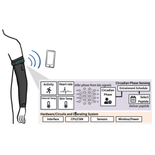

|
Juyang Bai I'm a research scientist at Google DeepMind in San Francisco, where I lead a small team that mostly works on NeRF. At Google I've worked on Glass, Lens Blur, HDR+, VR, Portrait Mode, Portrait Light, and Maps. I did my PhD at UC Berkeley, where I was advised by Jitendra Malik. I've received the PAMI Young Researcher Award. |

|
News
|
ResearchI'm interested in computer vision, deep learning, generative AI, and image processing. Most of my research is about inferring the physical world (shape, motion, color, light, etc) from images, usually with radiance fields. Some papers are highlighted. |
Publications |

|
Phantom: Privacy-Preserving Deep Neural Network Model Obfuscation in Heterogeneous TEE and GPU System
Juyang Bai, Md Hafizul Islam Chowdhuryy, Jingtao Li, Yao Fan, Chaitali Chakrabarti, Deliang Fan USENIX Security, 2025 (Under Review) TBD. |

|
From Threat to Defense: Denial of Service Attack in Multi-tenant FPGA System
Yukui Luo*, Juyang Bai*, Sabbir Ahmed, Adnan Siraj Rakin, Deliang Fan, Xiaolin Xu On Manuscript TBD. |

|
Learning Representation for Anomaly Detection of Vehicle Trajectories
Ruochen Jiao, Juyang Bai, Xiangguo Liu, Takami Sato, Xiaowei Yuan, Qi Alfred Chen, Qi Zhu IROS, 2023 project page / paper TBD. |
|

|
Towards a Toolkit for Free Living Wearable Development
Blaine Rothrock, Alexander Curtiss, Juyang Bai, Josiah Hester UbiComp/ISWC, 2022 project page / paper TBD. |

|
Fish Image Classification Using Deep Convolutional Neural Network
Xiaojuan Lan, Juyang Bai, Meng Li, Jiajun Li CIPAE, 2020 project page / paper TBD. |
Projects |


|
Stolen from Jon Barron. Thanks Jon! |